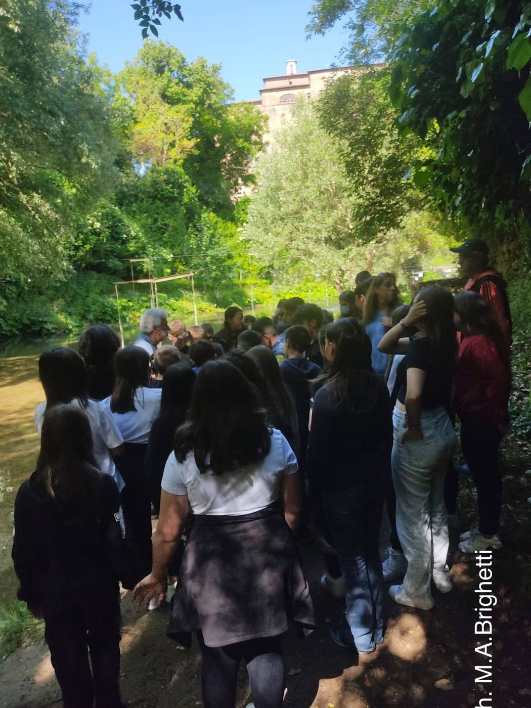
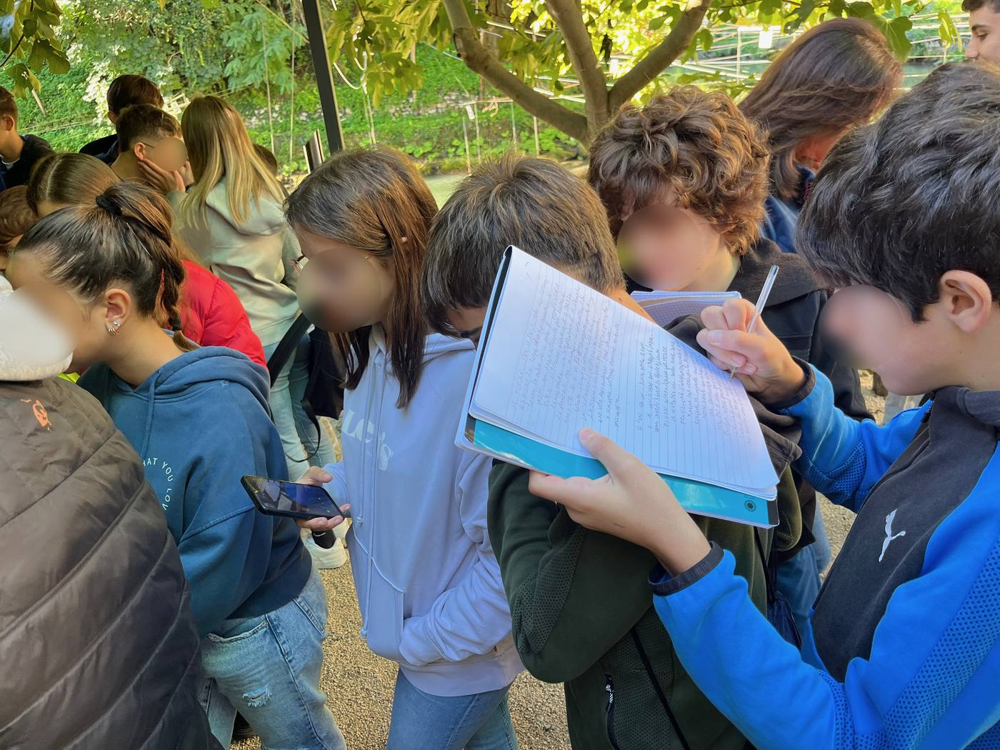
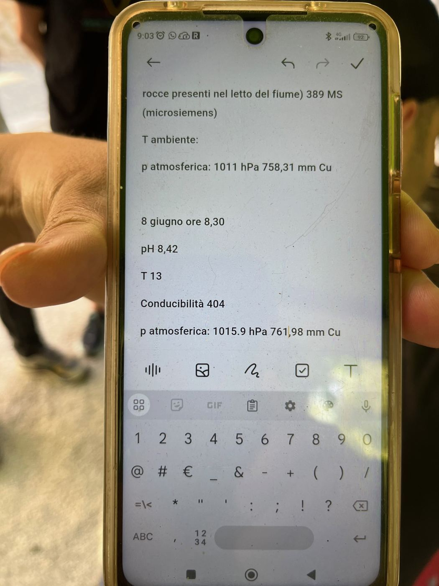
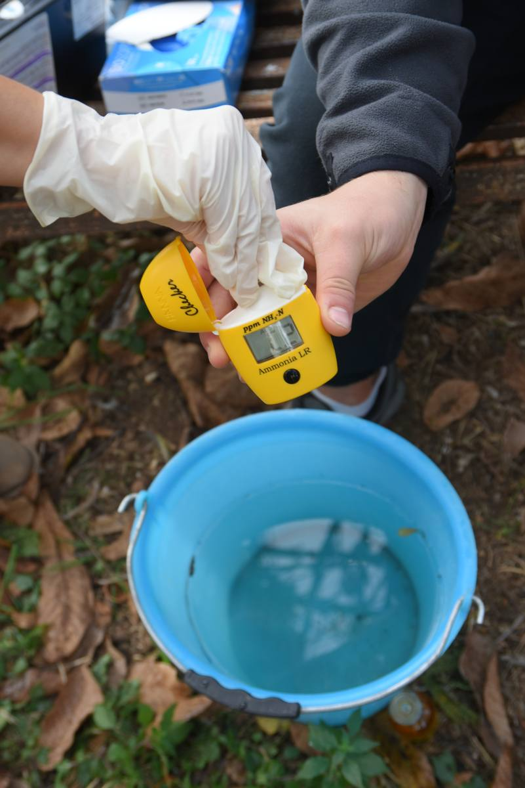

Da dove in poi il fiume non è più balneabile?
Scegli Escherichia coli e la vista *Profilo*: i punti si allineano da monte a valle e si vede a occhio dove la colonna supera la linea delle 1.000 UFC, il limite di balneabilità.
Campagna di monitoraggio
Aniene WaterLab esce dalla città: nove stazioni da Subiaco al Tevere, undici mesi di campionamenti e tre discese in gommone.

Il progetto Aniene WaterLab, finanziato dal programma «Periferiacapitale» della Fondazione Charlemagne, ha attivato dal mese di dicembre 2023 una campagna annuale di monitoraggio ambientale partecipato delle acque del fiume Aniene, tramite attività sul campo, sessioni di formazione, azioni di networking territoriale e attività di advocacy.
La proposta di progetto è nata con lo scopo di dare continuità al lavoro svolto negli ultimi anni in favore della tutela ecologica dei fiumi romani dalle associazioni territoriali e da tutte le persone volontarie impegnate nella protezione di questo ecosistema. Il percorso si è occupato del monitoraggio delle acque dell'Aniene non solo nel tratto urbano, come nelle scorse annualità, ma anche nel tratto extra-urbano, includendo ulteriori zone critiche dal punto di vista ambientale.
Le attività del monitoraggio partecipato, fondate sui principi della citizen science, hanno coinvolto direttamente attiviste e attivisti, singole persone e associazioni locali, impegnati nella raccolta dei dati e nella diffusione di pratiche e conoscenze utili alla preservazione degli ecosistemi fluviali. La validazione scientifica dei dati raccolti, a cura della Dott.ssa Bruna Gumiero, ecologa fluviale dell'Università di Bologna, e la conseguente divulgazione dei risultati emersi è un passo fondamentale per favorire un dialogo orizzontale e inclusivo tra società civile, esperti accademici, tecnici e istituzioni.
In questa annualità, grazie al coinvolgimento di Roma Adventure ASD, il progetto ha previsto anche diverse discese in gommone lungo il fiume. I monitoraggi effettuati in occasione di queste discese hanno permesso di ampliare lo sguardo su quasi tutto il tratto fluviale, contribuendo ad ampliare la conoscenza sulla sua salute ecomorfologica: sono state individuate e mappate diverse situazioni critiche relative a discariche, scarichi abusivi e altre problematiche che andrebbero propriamente indagate.

I numeri dell'annualità
Dove
I nove punti di campionamento scelti per il monitoraggio 2023/2024, da valle verso monte.
Situato vicino alla foce nel Tevere; tratto degradato, di difficile accesso diretto al fiume — il prelievo avviene con secchio dal ponte — caratterizzato da canneto e vegetazione ripariale.
Dotato di un pontile che agevola i rilievi; area interessata da rifiuti, orti abusivi in golena e insediamenti, ma con presenze di avifauna e anfibi.
Attracco realizzato da Insieme per l'Aniene APS; area ricca di vegetazione ma soggetta ad accumulo di rifiuti, data la vicinanza alle abitazioni.
Accesso tramite scalette nei pressi di un orto; tratto poco visibile dalla strada, soggetto a scarichi impropri di materiali edili.
Vicinissimo al GRA, presenta sponde molto ripide sotto i pilastri del ponte e una fitta vegetazione riparia.
Punto fortemente influenzato dalle attività umane e dagli apporti delle acque delle cave di travertino; l'accesso diretto alla riva è precluso.
Nei pressi del sifone ACEA; l'accesso è agevole ma si rileva la presenza di una vecchia discarica rinaturalizzata lungo le sponde.
Stazione poco antropizzata con sponde coperte da fitta vegetazione; conserva un carattere naturale ed è ideale per il monitoraggio ecologico dell'asta media.
Situato in un'area pianeggiante e ben accessibile presso il Centro Comunale Sport Fluviali; frequentato per attività sportive e ricreative, in un contesto a elevata naturalità.
L'estensione del monitoraggio verso l'alto e medio corso del fiume, fino a Subiaco e Vicovaro, si è resa necessaria per comprendere lo stato ecologico dell'Aniene prima dell'ingresso nel denso bacino urbano di Roma.
Dal fiume
Nel corso del progetto sono state organizzate tre discese di monitoraggio in gommone — il 14 marzo, l'8 giugno e il 20 settembre — lungo un tratto di 38 km compreso tra Ponte Lucano e la confluenza nel Tevere.

Scegli un parametro per vederne l'andamento in tutte le stazioni. Le linee orizzontali sono le soglie di qualità: passandoci sopra con il mouse compaiono il valore, cosa significa superarle e le possibili cause.
La dashboard serve a farle delle domande: dove peggiora il fiume, quando è successo, quali punti superano le soglie di legge. Si muove in quattro mosse.
Scegli Escherichia coli e la vista *Profilo*: i punti si allineano da monte a valle e si vede a occhio dove la colonna supera la linea delle 1.000 UFC, il limite di balneabilità.
Scegli ammonio e la vista *Andamento*, poi lascia acceso un solo punto. I picchi isolati raccontano un episodio; una riga sempre alta racconta un apporto continuo.
Scegli ossigeno disciolto in *Andamento* e tieni accesi due o tre punti: l'acqua fredda trattiene più ossigeno, quindi un calo estivo è normale, un calo invernale no.
Scegli conducibilità e la vista *Mappa*: i cerchi si colorano per livello e si individua subito il tratto in cui il valore cambia bruscamente rispetto ai punti vicini.
Caricamento dei dati… 9 punti di campionamento, 11 campagne da dic 2023 a ott 2024, 812 misure. Se il grafico non compare, il browser sta bloccando il caricamento dei dati: prova ad aggiornare la pagina.
I risultati
Dopo un anno di monitoraggio, il quadro è in parte rassicurante e in parte preoccupante. Temperatura e pH sono nella norma: le temperature seguono le stagioni, senza segnali di inquinamento termico, e il pH resta sempre nell'intervallo ottimale (6,5–9).
Le criticità riguardano soprattutto i nutrienti e la contaminazione fecale. L'ossigeno disciolto scende sotto i livelli di sicurezza a Casa del Parco e Ponte Mammolo, dove si toccano i 4,1 e i 3,5 mg/L: sotto i 6 mg/L i pesci iniziano a soffrire, sotto i 4 l'ecosistema è a rischio. In queste due stazioni anche i nitrati raggiungono un livello «sufficiente» secondo l'indice LIMeco, mentre nelle altre sono «buoni» o «elevati». I fosfati sono alti, oltre 0,1 mg/L, nelle quattro stazioni più a valle, e l'ammonio, che in natura dovrebbe stare sotto 0,2 mg/L, in passato ha superato 1 mg/L in quattro stazioni su cinque.
La conducibilità, che misura i sali disciolti, fa un salto netto tra Tivoli (589 µS/cm) e Ponte Lucano (1.301 µS/cm), probabilmente a causa delle cave presenti nel tratto.
Il dato più allarmante è quello di Escherichia coli. La maggior parte dei valori è tra 1.000 e 20.000 UFC, quindi non adatta alla balneazione. A Ponte Salario si superano le 20.000 UFC in tre occasioni, fino a 39.000 ad aprile 2024, e a settembre e ottobre le stazioni a valle arrivano a 88.000–153.000 UFC. Solo la stazione più a monte, a Subiaco, è sempre risultata adeguata alla balneazione.
Le schede
Questa sezione spiega quali parametri abbiamo analizzato e con quali strumenti, per aiutarti a leggere i dati della dashboard qui sopra. Nel report in fondo alla pagina trovi informazioni più specifiche su parametri e risultati.

°C
Non ha una soglia di qualità: va letta insieme alle stagioni. Quello che si cerca è un andamento regolare, senza salti che indichino inquinamento termico. I pesci, che non hanno una temperatura corporea propria, assumono quella dell'ambiente, e le sue variazioni incidono su comportamento e maturazione sessuale.

unità di pH
9,0 6,5
L'intervallo ottimale per un fiume va da 6,5 a 9. Dipende anche dalla geologia del letto: suoli acidi o torbiere possono portarlo sotto 5, mentre in fiumi lenti o sbarrati da dighe l'attività delle alghe può spingerlo fino a 9 o 10.

µS/cm
800 µS/cm 1.000 µS/cm 1.500 µS/cm
Va letta tenendo conto della geologia locale: nelle aree calcaree come il bacino dell'Aniene i valori normali sono tra 250 e 800 µS/cm. Valori oltre i 1.000 µS/cm possono indicare un'intensa attività umana o una forte evaporazione, oltre i 1.500 un possibile inquinamento da scarichi urbani, industriali o agricoli. Il D.Lgs. 31/2001 indica che la conducibilità delle acque dolci non dovrebbe superare i 2.500 µS/cm. Piogge intense la abbassano temporaneamente per diluizione.

NTU
La misuriamo con il tubo di Secchi del kit Fresh Water Watch, che dà classi approssimative e non un valore di laboratorio. Per questo non ha una soglia di legge: conta il confronto fra stazioni e fra campagne.

mg/L
6 mg/L 4 mg/L
Un valore tra 6 e 12 mg/L è considerato ottimale. Sotto i 5-6 mg/L le forme di vita acquatiche entrano in sofferenza: la carenza favorisce organismi anaerobi, che decompongono male la materia organica e producono sostanze tossiche. Misurarlo dà anche indicazioni sui cicli di azoto, fosforo, carbonio e zolfo.

mg/L di azoto
0,12 mg/L 0,24 mg/L
In natura, nelle acque superficiali, sta sotto 0,2 mg/L. I livelli dell'indice LIMeco, in mg/L di azoto ammoniacale, sono: livello 1 (elevato) sotto 0,03; livello 2 (buono) fino a 0,06; livello 3 (sufficiente) fino a 0,12; livello 4 (scarso) fino a 0,24; livello 5 (cattivo) sopra 0,24.

mg/L di azoto nitrico
2,4 mg/L 4,8 mg/L
Attenzione: il kit misura l'azoto nitrico, non i nitrati. Per ottenere la concentrazione di nitrati i valori vanno moltiplicati per 4,427. Per l'acqua potabile il limite è 50 mg/L di nitrati; nelle acque superficiali oltre 25 mg/L indicano una potenziale criticità per l'eutrofizzazione. I livelli LIMeco, in mg/L di azoto nitrico, sono: livello 1 (elevato) sotto 0,6; livello 2 (buono) fino a 1,2; livello 3 (sufficiente) fino a 2,4; livello 4 (scarso) fino a 4,8; livello 5 (cattivo) sopra 4,8.

mg/L
0,10 mg/L 0,40 mg/L
L'indice LIMeco si riferisce al fosforo totale e non ai fosfati, quindi il confronto è solo indicativo: il fosforo totale è sempre maggiore o uguale a quello reattivo che misuriamo noi, quindi la classe reale può essere uguale o peggiore di quella mostrata, mai migliore. I livelli, in mg/L di fosforo totale, sono: livello 1 (elevato) sotto 0,05; livello 2 (buono) fino a 0,10; livello 3 (sufficiente) fino a 0,20; livello 4 (scarso) fino a 0,40; livello 5 (cattivo) sopra 0,40.

UFC/100 mL
1.000 UFC 5.000 UFC 20.000 UFC
Le uniche due soglie ufficiali per le acque interne sono quelle della direttiva 2006/7/CE: 500 UFC/100 mL (qualità elevata) e 1.000 UFC/100 mL (qualità buona), pensate per statistiche pluriennali e non per il singolo prelievo. Oltre queste soglie usiamo i gradini indicativi del LIMeco: fino a 5.000 sufficiente, fino a 20.000 scarso, oltre 20.000 cattivo. Il grafico ha una scala logaritmica, altrimenti valori da zero a oltre un milione sarebbero illeggibili.
Per approfondire, o se hai dubbi su quello che hai letto, qui trovi i documenti completi da cui vengono i dati e le interpretazioni di questa pagina.
Il racconto completo dell'annualità: il progetto, la rete, il metodo e i risultati del monitoraggio, in forma divulgativa. È il documento da cui vengono i testi di questa pagina.
Scarica il PDFL'analisi dei dati a cura di Bruna Gumiero, con il confronto tra le due annualità di monitoraggio.
Scarica il PDFChi l'ha resa possibile
Il monitoraggio 2023-2024 è il lavoro di cinque realtà che si sono divise il campo, la navigazione, le scuole e il rapporto con le istituzioni. Ciascuna con il suo mestiere, tutte sullo stesso fiume.
 Insieme per l'Aniene APS
Salvaguardia della Riserva Naturale Valle dell'Aniene.
Insieme per l'Aniene APS
Salvaguardia della Riserva Naturale Valle dell'Aniene.
 A Sud
Giustizia ambientale e climatica.
A Sud
Giustizia ambientale e climatica.
 Retake Roma Sacco Pastore
Cura del lungofiume e della pista ciclopedonale.
Retake Roma Sacco Pastore
Cura del lungofiume e della pista ciclopedonale.
 A.D.A. APS
Educazione ambientale e raccordo con le scuole.
Roma Adventure ASD
Navigazione fluviale e uscite in gommone.
A.D.A. APS
Educazione ambientale e raccordo con le scuole.
Roma Adventure ASD
Navigazione fluviale e uscite in gommone.